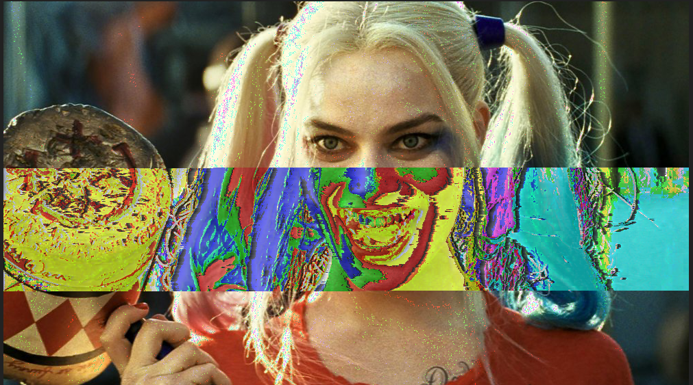
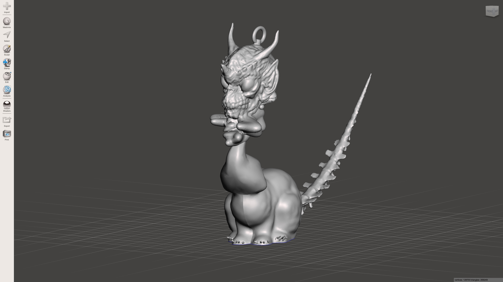

Dis-Man
Pencil Sketching

DEAMON OF FEAR
Ceramics - Mermaid Heart

LOVE FOR COLOR
Glitch Art

What is New Media Art?
Writing Response Essay
Art through the Eyes of New Media Artists What is new media? According to Wikipedia, new media refers to the artworks created with new media technologies, including digital art, computer graphics, computer animation, virtual art, internet art and so much more. My definition of new media art, on the other hand, would be a way for an artists’ visions to come to life and be seen. I myself have only just begun to see the effects of new media and am amazed of how far new media artists can take their visions. New media artists can create dynamic work which leaves the viewer speechless; even the artist themselves at times. Also, new media is probably an easier way to express yourself rather than using an old fashioned pencil and paintbrush. Of course this is coming from someone who has never used the digital world to create anything. I love older methods for creating art that you can get your hands dirty with, however, I’m not opposed to trying my hand at a new skill.
Nik Ainley grew up in the United Kingdom where he taught himself Photoshop while going to college. Ainley likes to work in both 2D and 3D when creating his images. Tribal Woman is a design using the head of a woman with markings that make her come off the page. Even though the design uses her face, there are beautiful colors and markings and other things coming out of the top of her head. The design on the top of her head is unique and makes you want to look more closely. If you look real close there are butterflies resting on what appears to be old brick walls crumbled up and connected together by vines. There is purple, blue, magenta, green, brown and specks of light illuminating every aspect of the woman’s face as well as the butterflies. The woman’s face is so serene and calm that it makes me want to visit whatever place she’s from and stay there. I didn’t notice her ear on the right side because I thought it was just a section of her face that has been broken off. The Tribal Woman would be considered new media art because the colors are very striking. The artwork seems to be bursting with energy. It’s unlike anything I’ve seen before. Seeing the Tribal Woman makes me want to do something like this because I like to work with bold colors.
I enjoy looking at any of Nik Ainley’s work because it seems like I’m looking into a person’s mind and seeing their dreams. There are so many layers to his work. I’d love to know where he started and how he placed each layer. Another Ainely piece of work is a bird silhouette. This piece caught my eye because the bird was comprised of hundreds of looping lines with various colors in very striking patterns. The patterns are not random; meaning there is purpose to the space and his selection of colors feels exotic. Also, I can tell he had a lot of patience with many of his art pieces. I would like to know how he does what he does so I can do such inspirational art, as well. Most of Nik Ainely’s work is of human faces and his use of the digital tools is absolutely stunning. But he doesn’t stop with human faces; he uses their bodies as well. He also uses nature or incorporates it in some of his work like the Tribal Woman.
Sarah Ludy is a multimedia artist who started out painting and then later fell in love with digital media. Some of Ludy’s art feels very abstract; almost like watercolors. Her art is very beautiful because she uses so many bright and happy colors. Her work uses up the entire screen for her digital art, as well as for her painting’s. There’s an equal balance of light and dark in her paintings, along with gradation. Some of her artwork has very calming colors. Ludy’s very experimental with her digital art. She does plan her work, but also relies on her intuition when creating. She likes to incorporate what she calls “digital dust” in the digital spaces she creates. The “digital dust” helps her make these spaces almost tangible. Ludy re-shapes 3D works into a composition that interests her. Her work feels very much new media because everything in her digital art pieces have spaces that are very sharp and angular. Her digital works don’t have the look of traditional artworks such as painting. Although there is one piece of art that makes me wonder if she used traditional painting or digital media because it looks like she used both, I'm not really sure. This piece makes me question her technique. Once again I find myself wanting to do something with digital media. One of Ludy’s works, entitled Sky Canyon 2018, looks as though it were a traditional painting but the gradation is spot on and again there’s her familiar play with light and dark. I like her work because you feel as though you’re stepping into another dimension, another world. Also, her use of colors is very beautiful. The rooms she invents (on Pinar&Viola blog ) using her digital tools leaves me wanting to know how she did that and what was her process. Did she start with one area of the room and gradually work from there? Maybe. Also, there doesn’t appear to be anything out of the ordinary in her art, just how she combines the pieces to make the bigger picture. I like what Ludy does because it resonates with me. Her use of color is very bold and striking. She lets her unconsciousness and intuition guide her through these “explorations of space.”
Alberto Seveso Seveso doesn’t like the term artist and never thought of himself as one. In an interview by Giorgia Capozzi from American Express Essentials, Seveso says to have fun with what you like to do and that it’s alright to be liked by some and not “necessarily by everyone.” He doesn’t like products that are mass produced because they then lose that authentic aspect about them. Seveso loses interest with products that are considered hip, mainstream or trendy, which is why he felt “prone” to change his art every couple of years or try different digital projects. I chose Seveso because a piece of his art stuck in my mind; I couldn’t stop looking at it. The piece that caught my eye resembles that of a colorful piece of cloth submerged under water. There are so many different colors and I absolutely love how it all flows. Some of his other works look like colorful liquid being poured into water. Other works look like feathers. Still more are faces of beautiful women either being torn into colorful pieces or Seveso is sculpting their faces using what looks like leaves. In some ways they look like puzzles. Seveso’s art definitely feels and looks like new digital media because how fresh and vibrant the colors are; not to mention the edges are so clean. Seveso’s art changes every couple of years or so and he’s not afraid to try newer projects. I like that because his style is very fluid and his work makes me want to think of ways I can keep my work fresh. Seveso started out as an illustrator, then photographer, then back to illustrating. He now combines both in order to create such mesmerizing works of art.
I like Seveso’s use of photography. This is an area I also enjoy. His work makes me want to invest more of my time photographing in order to experiment with digital artwork. In an interview, Seveso says that being an artist really doesn’t suit him at all. I think I feel the same way because when I was in middle school and high school, I never wanted to consider myself as an artist. The reason why is that I thought a person had to have skill and patience; not to mention an eye for detail. Back then all I wanted to do was draw, read or write, especially when I had academic homework. It didn’t occur to me that that’s what many young artists did. That while they’re doing something so undeniably boring, all they want to do is write, read or sketch. I like Seveso’s art because his work is so beautifully wild and colorful. I also discovered Seveso has explored different types of computer’s to make art and it wasn’t until 1996-97 that he discovered photoshop.This will be my first exploration with photoshop. I’m a little terrified, but have been given hope through investigating these three artists.
The Cow, the Moon, and the Ladder...
3D Art Remix - Meshmixer
